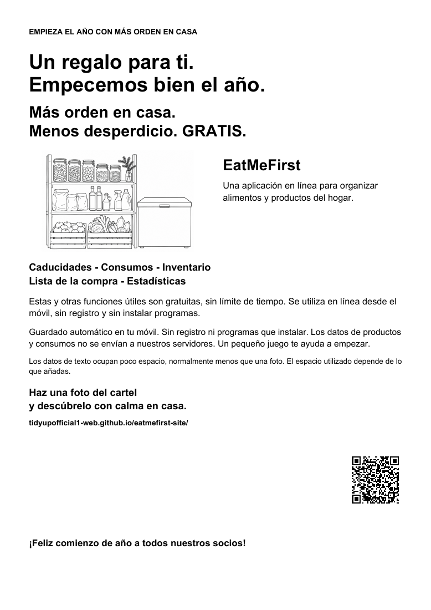
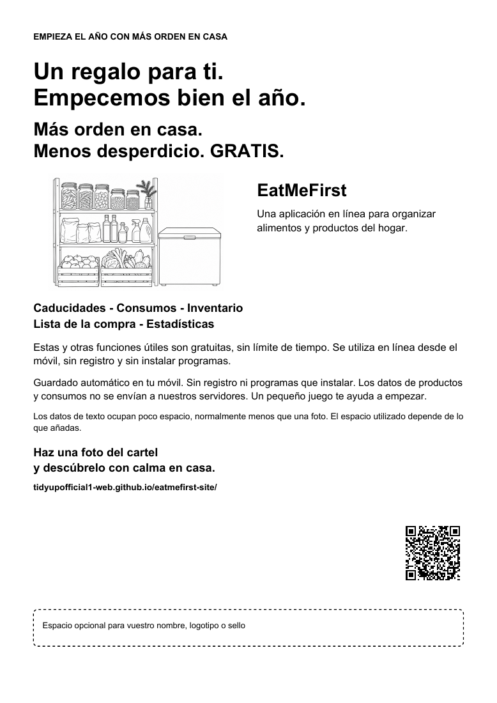
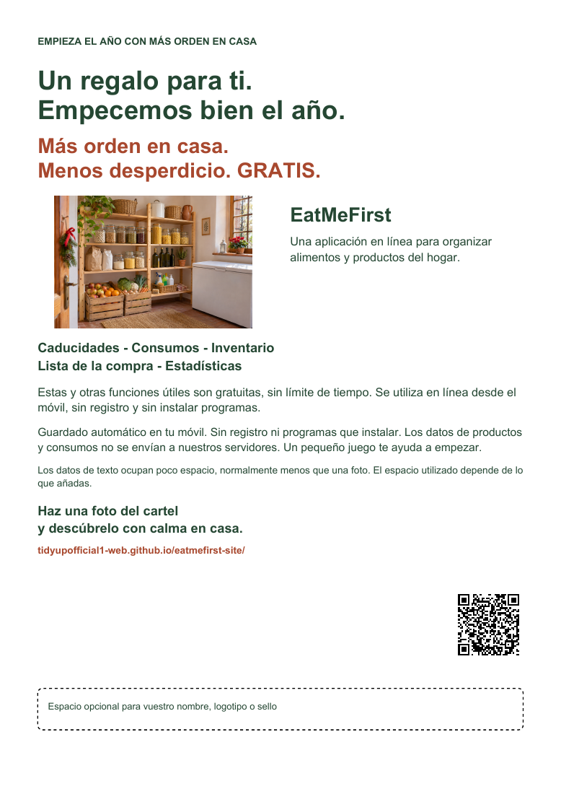

Un mensaje para empezar el año, listo para compartir.
La foto y el dibujo muestran reservas del hogar, cajas de fruta y un arcón congelador. Imprimid un cartel para el punto de recogida o compartid una imagen en vuestra web.
Descargar el PDF A4 de cuatro páginasEste PDF incluye las cuatro versiones. Al imprimir, seleccionad solo la página que queráis.

Blanco y negro - espacio para logotipo
Descargar esta imagenColor - sin logotipo
Descargar esta imagen
Color - espacio para logotipo
Descargar esta imagenUn mensaje para vuestros socios
Descargar el textoEsta página no envía mensajes. Vosotros elegís el canal y los destinatarios.
Empieza desde tu móvil
EatMeFirst se lee bien en la pantalla del móvil. Con la cámara puedes escanear códigos de barras mientras guardas la compra. También funciona en un PC, donde puedes introducir los productos manualmente, incluso sin código de barras.
¿Estás viendo la web desde un ordenador? Abre la cámara del móvil como para hacer una foto y enfoca el código QR. No hace falta hacer la foto: toca el enlace cuando aparezca. ¿Ya estás en el móvil? Toca el enlace para abrir la web.